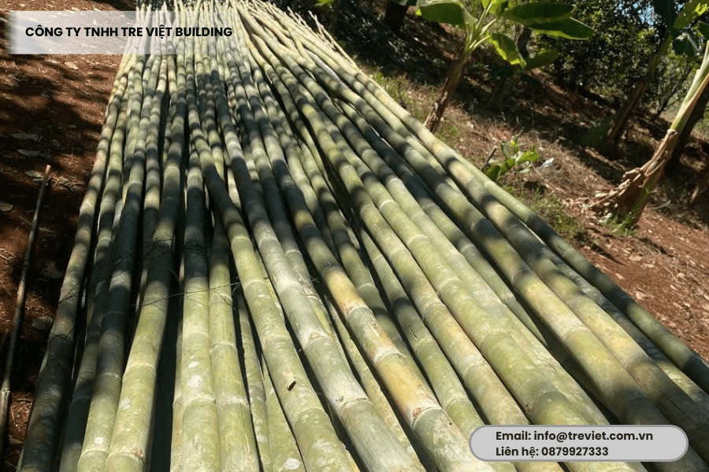
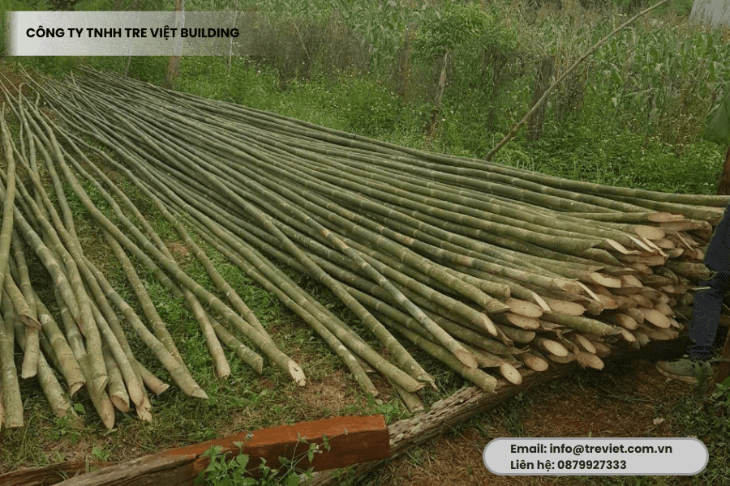
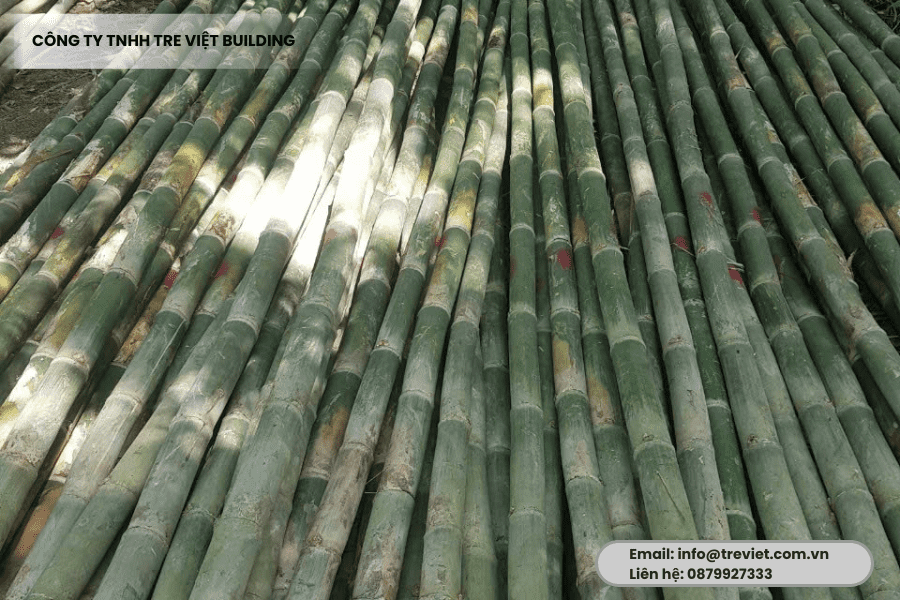

Tầm vông là một trong những vật liệu tre truyền thống, được ưa chuộng nhờ độ bền, tính dẻo dai cùng vẻ đẹp tự nhiên. Và không chỉ phổ biến trong thi công, thiết kế cảnh quan, nội thất, tầm vông còn đóng vai trò quan trọng trong các công trình homestay, sân vườn, nhà gỗ, quán cà phê, resort,… Thế nhưng, làm thế nào để chọn được loại tầm vông phù hợp, chất lượng, xử lý đúng chuẩn? Đây là điều mà không phải ai cũng biết. Vậy nên, hãy cùng Tre Việt Building tìm hiểu chi tiết về tác dụng, phân loại, lưu ý khi chọn mua vật liệu trong bài viết này bạn nhé.
Tác dụng của cây tầm vông trong thi công và thiết kế nội – ngoại thất
Vật liệu xanh, thân thiện với môi trường
Tầm vông là vật liệu được ưa chuộng trong các dự án, các công trình xây dựng bởi đặc tính tự nhiên cùng khả năng tái sinh nhanh chóng, vượt trội. Đặc biệt, vật liệu an toàn, thân thiện, không gây ô nhiễm môi trường.
Điểm nhấn thẩm mỹ trong thiết kế nội – ngoại thất
Tầm vông sở hữu nét đẹp mộc mạc, tự nhiên với sắc nâu trầm hay vàng nhạt, tùy vào cách xử lý của mỗi đơn vị. Đường kính đều, thân thẳng, dễ thi công và linh hoạt trong thiết kế. Vậy nên, loại tre này cực kỳ được ưa chuộng, thường được dùng để:
- Ốp trần, vách trang trí theo phong cách tropical, Zen, rustic,…
- Thiết kế hàng rào, lam chắn nắng, mái hiên.
- Thi công cầu tre, sàn tre, sàn gác tạm.
- Thiết kế khung nhà, cột chịu lực, dầm.
- Làm vách ngăn không gian hay đơn giản là tạo hiệu ứng nghệ thuật cho các quán cà phê, homestay, studio chụp ảnh,…
- Kết cấu sân khấu, rạp ngoài trời, nhà hàng, khu nghỉ dưỡng,…
Làm đồ thủ công mỹ nghệ và tiêu dùng
Tầm vông còn được dùng làm đồ gia dụng, bàn ghế tre, khung tranh tre, sản phẩm xuất khẩu nhờ độ bền, đẹp theo thời gian. Đặc biệt là tuyệt đối an toàn cho sức khỏe của người tiêu dùng.
Phân loại các cây tầm vông phổ biến hiện nay

Trên thị trường hiện nay, cây tầm vông được phân loại theo rất nhiều tiêu chí, nhằm phục vụ đa dạng mục đích sử dụng của người dùng. Cụ thể:
- Phân loại theo chiều dài: 3m – 4m – 5m – 6m – 8m – 12m
- Phân loại theo đường kính gốc: 3cm – 5cm – 7cm – 10cm
- Phân loại theo độ già cây: Tầm vông non (khoảng 3 năm) và tầm vông già (khoảng từ 5 – 7 năm).
- Phân loại theo mục đích: Thiết kế & thi công, trang trí nội thất, đồ mỹ nghệ, chống lũ, làm giàn để trồng cây,..
Một số lưu ý quan trọng khi mua cây tầm vông mà bạn cần biết
Kiểm tra độ già và độ thẳng

Chúng tôi khuyên mọi người nên chọn mua cây tầm vông thân thẳng, đều, già từ 5 năm trở lên để đảm bảo được độ cứng, ít cong vênh trong quá trình thi công, sử dụng.
Tình trạng xử lý
Một điều hết sức quan trọng mà mọi người cần lưu ý đó là tầm vông phải được xử lý đúng quy trình để đảm bảo tránh mối mọt, giữ cho độ bền cao. Về điều này, bạn hoàn toàn có thể tin tưởng, lựa chọn vật liệu tại Tre Việt Building, bởi quy trình chuẩn của chúng tôi bao gồm:
- Tuổi cây khai thác: Từ 5 năm trở lên (trừ cây cắt tỉa).
- Thời điểm khai thác: Mùa khô (từ tháng 11 đến tháng 8 năm sau).
- Xử lý sau thu hoạch: Làm sạch – uốn thẳng – xử lý mối mọt – phơi khô tự nhiên 20–30 ngày
- Gia công theo yêu cầu: Cắt theo kích thước, điều chỉnh độ ẩm – màu sắc, đóng gói riêng theo quy cách khách hàng
Nguồn gốc xuất xứ rõ ràng
Khách hàng nên mua vật liệu tầm vông làm nhà tại cơ sở uy tín, có xưởng sản xuất chất lượng và làm chủ vùng nguyên liệu lâu năm. Như vậy, tầm vông sẽ không qua trung gian và đảm bảo giá thành là cạnh tranh nhất.
Vì sao nên chọn mua cây tầm vông tại Tre Việt Building?

Từ một loại vật liệu đơn thuần, mộc mạc, ít ai nghĩ tầm vông có thể trở thành “linh hồn” trong rất nhiều công trình kiến trúc xanh hiện đại. Nơi đó có sự gặp gỡ, giao thoa giữa vẻ đẹp tự nhiên, giá trị truyền thống với sự sáng tạo và cách điệu. Vậy vì sao nên chọn mua tầm vông tại Tre Việt Building?
Chất lượng được kiểm soát từ gốc
Tre Việt Building sở hữu vùng nguyên liệu riêng lên đến hơn 200ha tại Lâm Đồng. Vậy nên, chúng tôi chủ động toàn bộ quy trình, từ chọn giống, canh tác, thu hoạch cho đến xử lý kỹ thuật. Vì thế mà mỗi một cây tầm vông đều đảm bảo có độ tuổi phù hợp, vân gỗ đẹp, chắc khỏe, ít cong vênh, sẵn sàng cho mọi ứng dụng từ kết cấu đến trang trí.
Giá thành cạnh tranh nhất thị trường
Như chúng tôi đã chia sẻ, điểm mạnh của Tre Việt Building đó chính là nằm ở việc chúng tôi có vùng nguyên liệu riêng cùng hệ thống sản xuất khép kín. Do vậy không phải phụ thuộc vật liệu vào bất cứ một bên thứ 3 nào. Chúng tôi tự cung, tự cấp. Vì thế, đơn vị cam kết cung cấp tầm vông với mức giá cạnh tranh, ổn định nhất thị trường.
Gia công chuẩn chỉnh – Đáp ứng mọi nhu cầu
Chúng tôi cung cấp dịch vụ gia công cây tầm vông theo yêu cầu. Thợ lành nghề tại Tre Việt Building sẽ tiến hành cắt tỉa đúng kích thước, xử lý kỹ thuật theo đúng tiêu chuẩn, điều chỉnh màu sắc, độ ẩm tùy vào tính chất, đặc thù của từng dự án. Dù bạn cần số lượng lớn hay số lượng nhỏ, chúng tôi vẫn đều sẵn sàng phục vụ với thái độ nhiệt tình cùng chất lượng cao nhất.
Tre Việt Building minh bạch trong báo giá, linh hoạt theo khối lượng đặt hàng, giúp khách dễ dàng kiểm soát chi phí, tối ưu ngân sách cho phù hợp với quy mô.
Hơn 150+ dự án, hàng ngàn khách hàng tin tưởng

Với nhiều năm kinh nghiệm phát triển, đơn vị chúng tôi đã đồng hành cùng hơn 150+ công trình lớn nhỏ trên khắp toàn quốc. Từ những quán cà phê, quán spa nhỏ xinh cho đến các căn hộ, các khu nghỉ dưỡng cao cấp. Và uy tín của Tre Việt Building không chỉ đến từ chất lượng sản phẩm tốt, mà còn đến từ sự tận tâm trong từng khâu tư vấn, phục vụ!
Tư vấn kỹ thuật tận tâm
Tre Việt Building không đơn thuần chỉ là đơn vị thi công hay nhà cung cấp, chúng tôi còn đóng vai trò như một người bạn, đồng hành cùng khách hàng từ khi bắt đầu đến khi hoàn thành dự án. Đội ngũ kỹ thuật viên giàu chuyên môn, kinh nghiệm luôn sẵn sàng hỗ trợ, tư vấn, lựa chọn đúng vật liệu phù hợp, hướng dẫn cách xử lý, bảo quản. Qua đó giúp tối ưu công năng và gia tăng tính thẩm mỹ cho mọi dự án.
Giao hàng toàn quốc
Chúng tôi cung cấp dịch vụ vận chuyển nhanh chóng, an toàn đến mọi tỉnh thành trên toàn quốc. Dù đơn hàng của bạn lớn hay nhỏ, Tre Việt Building vẫn sẽ luôn đảm bảo tiến độ. Đặc biệt, cam kết hỗ trợ khách hàng sau bàn giao và giải quyết mọi yêu cầu một cách kịp thời, hiệu quả nhất.
Và nếu bạn còn đang phân vân, băn khoăn chưa biết nên mua cây tầm vông ở đâu, hãy chọn ngay Tre Việt Building nhé! Liên hệ để được tư vấn ngay hôm nay!
Thông tin liên hệ:
CÔNG TY TRÁCH NHIỆM HỮU HẠN TRE VIỆT
BUILDING
Địa chỉ: 917 Phạm Văn Đồng, Phường Linh Xuân, Thành phố
Hồ Chí Minh
Nhà máy sản xuất: Phú Hợp B, Xã Phú Lâm, Đồng Nai.
Website: tretruc.com.vn
Điện thoại – Zalo: 093.123.5757
Email: info@treviet.com.vn – treviet23@gmail.com